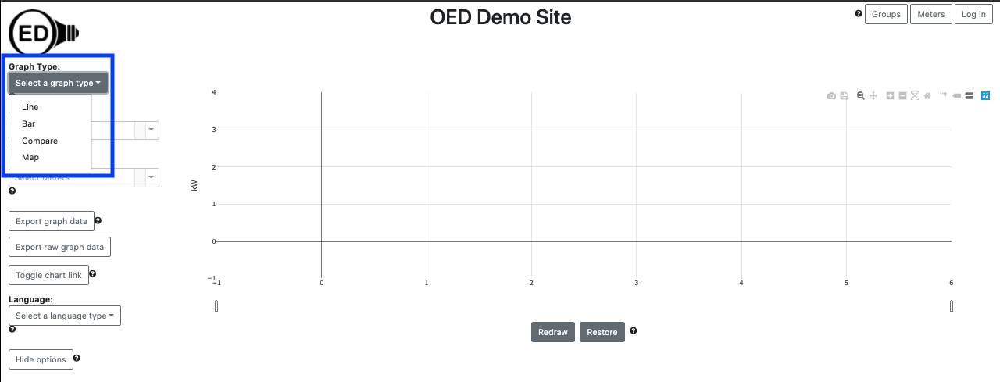

OED Documentation
Graph Type
Version V0.8.0
The latest version of this page is V1.0.0.
Documentation overview
User documentation
Information
Meters/Groups
Other Features
Admin documentation
Documentation versions for this page
Overview
OED offers multiple types of graphics so you can engage with the data in different ways. The selection of meters and groups remains as you change graphic pages. Also, to make it easier to use multiple graphics, the color of a meter or group remains the same on the line, bar and map graphic. Compare graphics use the same two colors for previous/current time period for all meters/groups.
Usage
There are four types of graphics that each reside on a different page of OED. You can select the desired graphic by clicking one the choices from those available in the dropdown menu (highlighted by the blue box) in the following figure: 
The graphics options are given next with a brief description. The provided link goes to another help page with extensive information on each graphic page.
- Line Graphic. In this representation, each meter or group is represented by a line graph of usage versus time. There are options to control the time frame shown and to scroll through time.
- Bar Graphic. In this representation, each meter or group is represented by a bar graph of usage versus time. There are options to control the time frame shown in each bar and the type of bars used.
- Compare Graphic. In this representation, each meter or group is represented in an individual bar graph that shows usage during the current period versus the same period immediately before. For example, usage of this week versus last week. There are options to control the period compared and order in which the bar graphs are shown.
- Map Graphic. In this representation, each meter or group is represented by a circle on a map where the size of the circle indicates the usage. This graphic is designed to visually show how usage varies across areas on the map.
Details
Use the provided link to get to other help page with extensive information on each graphic page.
By default, OED will display the line graphic page when it starts. The site administrator can change this to be any of the graph types. The user can choose any type as described above.